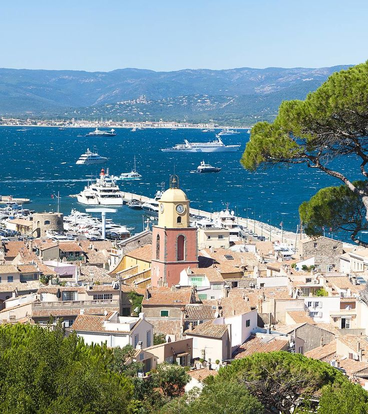

St. Tropez
Nestled along the French Riveria and a short drive from Nice or Cannes, St. Tropez is one of the liveliest towns along the coast during the summer. Vacationers delight in the sandy beaches, culture, gourmet food and hot nightlife of St. Tropez.
In St. Tropez, at the heart of the French Riviera, the sun really does shine brighter and the Mediterranean is truly bluer. Or maybe that's just the effect of the chilled rosé going to your head when you visit St. Tropez. If long leisurely lunches and days spent poolside interrupted only by shopping for Provencal handicrafts are what led you to St. Tropez travel, the historic charms of this seaside town will be a bonus.
The best places to stay in St.Tropez would include The Château de la Messardière, Hôtel Byblos, Villa Marie, and Cheval Blanc. The best places to eat are La Vague D'Or, Au Caprice des Deux, Le Sporting, and Auberge des Maures. Some fun things to do in St.Tropez include walking down the promenade of the old port, relaxing on the variety of beaches, Taking a boat tour, and checking out the Musee de L'annonciade.